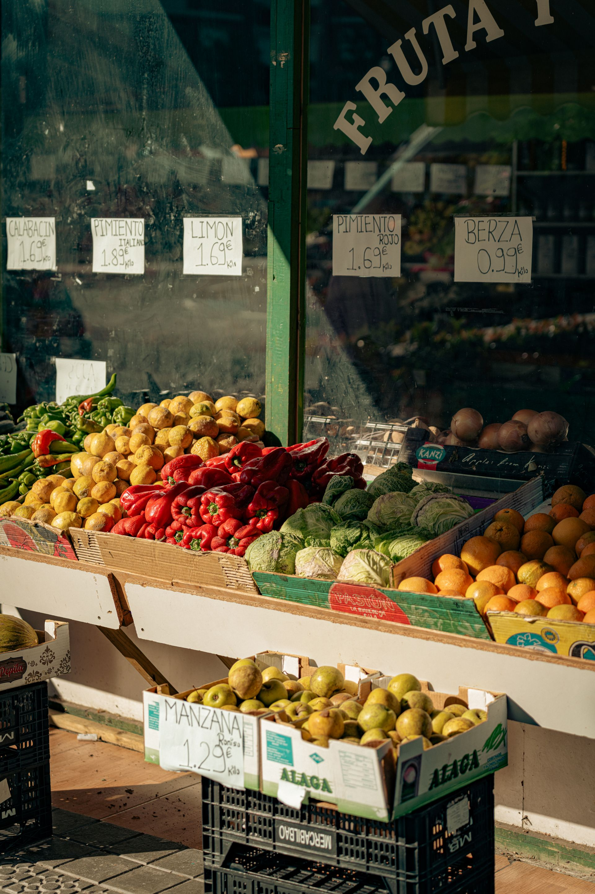
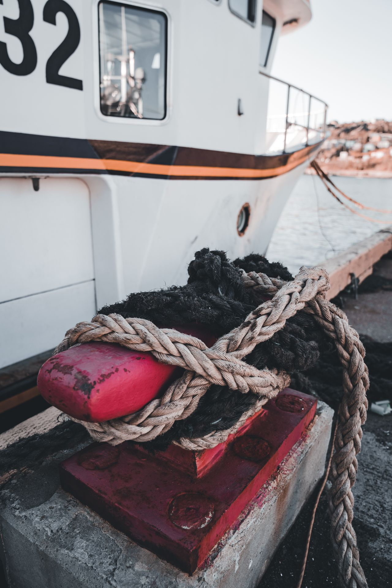
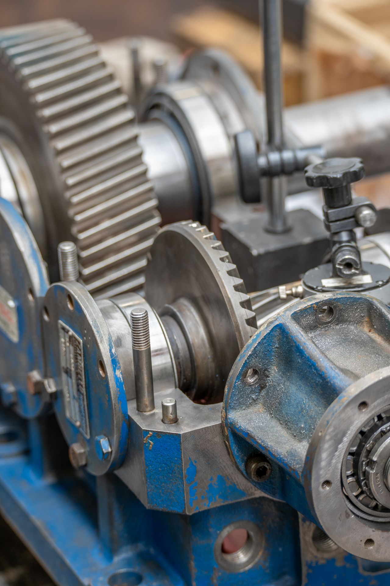
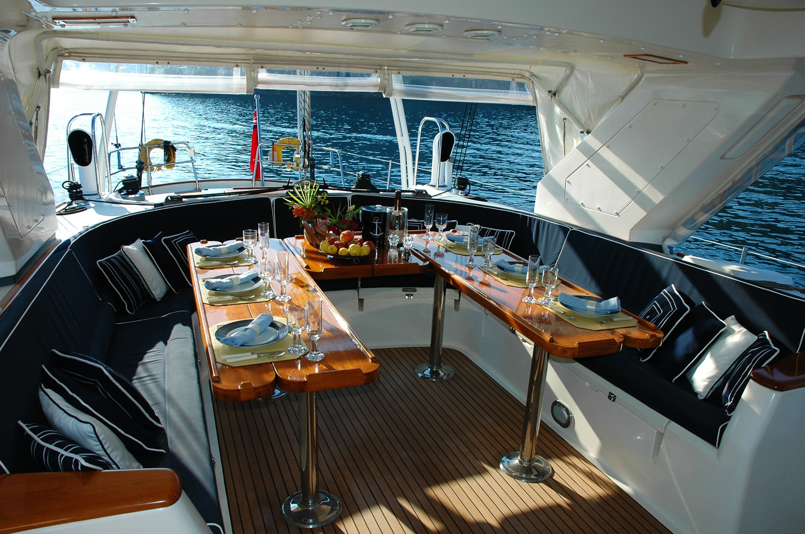
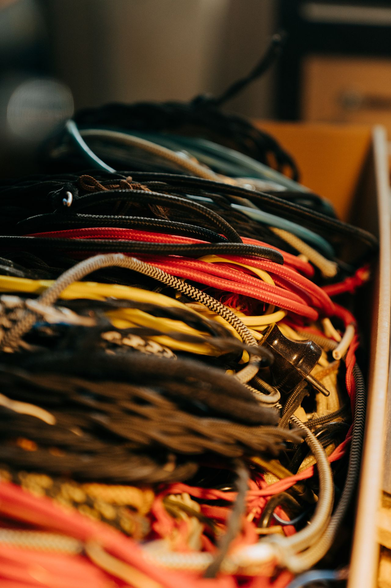
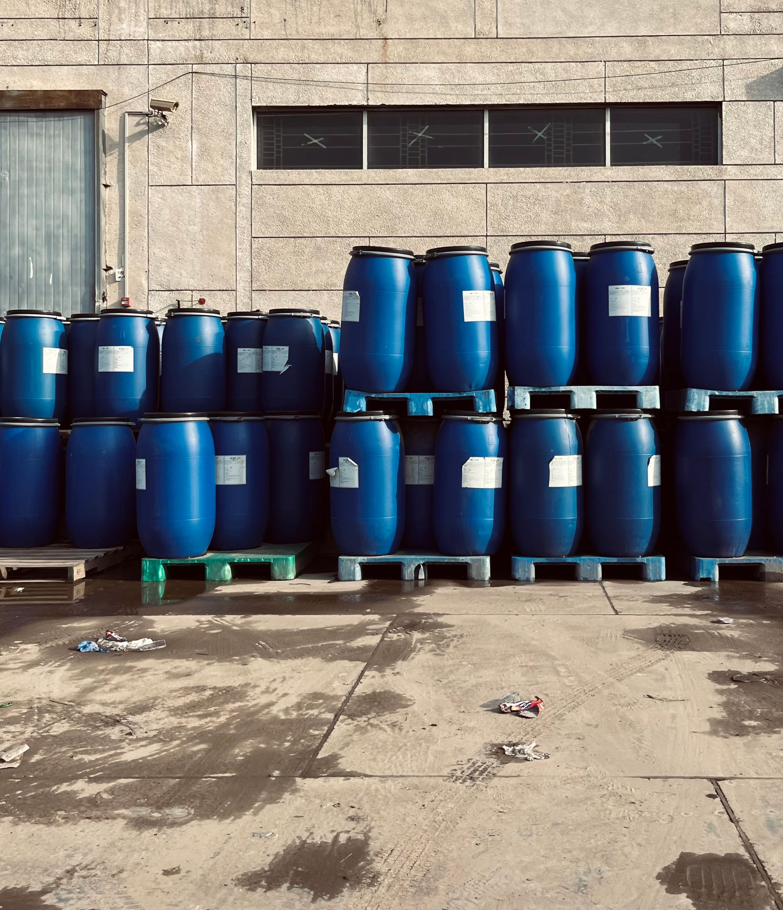
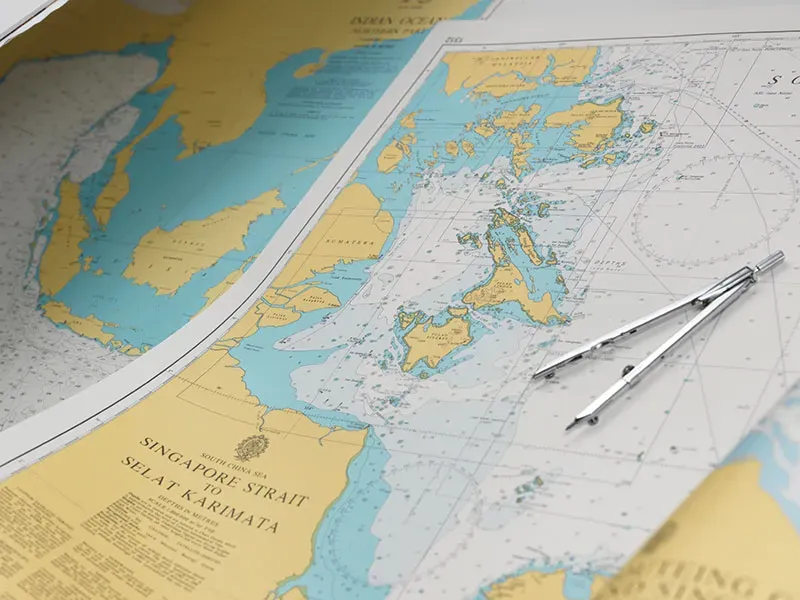
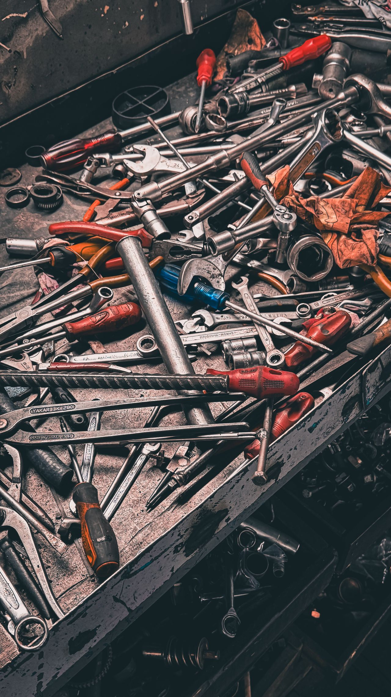
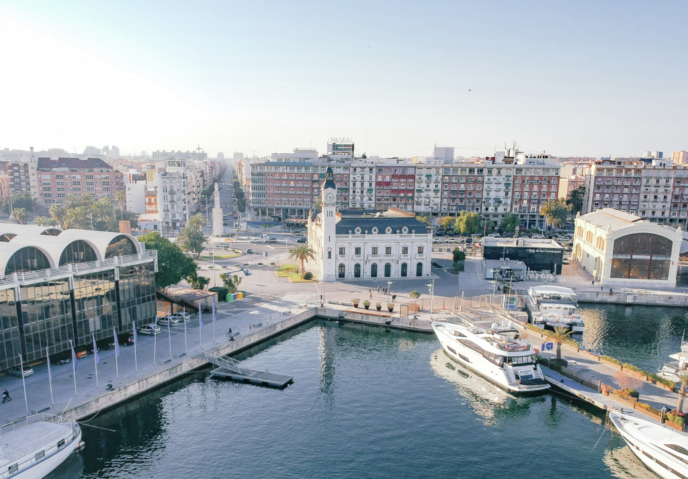

PORT 01
Algeciras
Spain's largest transshipment gateway and premier bunkering hub, strategically dominating the Strait of Gibraltar for high-frequency vessel provisioning and offshore launch supplies.
From fresh provisions and bonded stores to deck equipment, engine parts, and SOLAS safety gear, SHIP CHANDLER IN SPAIN CO., LTD delivers precision maritime supply synchronized with your vessel's port call.
Spain is a sovereign European maritime nation situated on the Iberian Peninsula in Southwestern Europe, bordered by the Mediterranean Sea to the east and south, and the Atlantic Ocean and Bay of Biscay to the north and west. Renowned for its rich seafaring heritage, world-class port infrastructure, and commanding dominance over the vital Strait of Gibraltar, Spain functions as one of the world's most indispensable maritime crossroads. Its deepwater harbors seamlessly interconnect European continental commerce with high-volume transatlantic, African, Mediterranean, and Middle Eastern international shipping lanes.
As dedicated marine suppliers, Ship Chandler in Spain operates a synchronized supply chain capable of delivering provisions, technical stores, and customs-bonded goods to vessels at berth or offshore anchorage across the entire Iberian coastline, the Canary Islands, the Balearic Islands, and the North African enclaves.
We regularly arrange vessel supplies, provisions, and technical chandlery services to all 34 primary ports listed below. Please note that these represent our main operational hubs, but our logistics network reaches any commercial berth, private terminal, shipyard, or anchorage across Spain upon request.
Spain's largest transshipment gateway and premier bunkering hub, strategically dominating the Strait of Gibraltar for high-frequency vessel provisioning and offshore launch supplies.
Our operational headquarters and Spain's top container gateway, delivering rapid quayside food stores, technical equipment, and bonded supplies across all commercial docks.
Leading Mediterranean multimodal commercial, cruise, and specialized container port providing round-the-clock ship stores, technical spares, and galley replenishment.
The industrial shipping powerhouse of Northern Spain on the Cantabrian Sea, handling heavy bulk, chemical tankers, and general cargo with full technical chandlery.
A major European petrochemical and bulk liquid deepwater complex, fully equipped for specialized marine chemicals, deck safety supplies, and inner-dock provisioning.
Strategic deepwater naval and commercial harbor specialized in liquid bulk, minerals, and vessel maintenance, featuring dedicated launch and berth supply services.
Prominent Atlantic estuary port in southwestern Spain supporting extensive energy, mining, and industrial traffic with certified cold-chain and technical stores.
Renowned Mid-Atlantic maritime crossroads in Gran Canaria, world-famous for off-port-limit (OPL) provisioning, bunkering, repair synchronization, and fleet chandlery.
Crucial Atlantic island hub servicing international container lines, passenger vessels, and transiting tankers with complete ship supplies and technical materials.
Galician Atlantic deepwater port with modern outer harbor facilities for dry bulk, crude oil tankers, and commercial cargo vessels requiring prompt supplies.
Europe's premier fishing port and major automotive export gateway, supported by advanced maritime workshops, fresh galley stores, and technical supplies.
Northern Spain's bulk cargo giant on the Bay of Biscay, handling coal, iron ore, and heavy industrial vessels with rugged deck, engine, and safety stores.
Modern northern natural harbor specialized in automotive logistics, Ro-Ro ferry routes, and agricultural bulks, offering express ship delivery at all terminals.
Historic Atlantic bay port featuring world-class shipyards, container terminals, and offshore support with prompt launch and dockside provisioning.
Spain's only commercial inland river port, navigated via the Guadalquivir River, receiving tailored container, bulk, and agricultural vessel chandlery.
Dynamic southern port on the Costa del Sol accommodating cargo ships, container feeder vessels, and cruise liners with 24-hour supply dispatch.
Eastern Mediterranean commercial port managing container, solid bulk, and Ro-Pax traffic with expedited food provisions and technical spare deliveries.
Vital Mediterranean industrial port dedicated to ceramic raw materials, chemical products, and container trade with dedicated boarding synchronization.
Southeastern Mediterranean hub handling agricultural exports, minerals, and North African ferry connections with full vessel chandlery service.
Strategically situated Granada gateway connecting Southern Spain with North African shipping lanes, delivering provisions and technical hardware.
Deep sheltered Galician estuary known for shipbuilding, LNG terminals, and outer port container berths, fully supported with certified marine stores.
Active Galician port specialized in deep-sea refrigerated fish cargo, container lines, and merchant traffic with strict cold-chain food provisioning.
Sheltered deepwater port in the Ría de Arousa handling aluminum, timber, containerized goods, and general cargo with fast quayside stores.
The principal Balearic Islands commercial, freight, and ferry hub, offering high-standard gourmet provisions, bonded stores, and deck supplies.
Autonomous Spanish enclave on the North African coast of the Strait, world-renowned for duty-free bonded stores, bunkering, and fast anchorage launch.
Spanish Mediterranean enclave port handling regular Ro-Ro ferry links and coastal merchant vessels with prompt food provisions and technical gear.
Easternmost Canary Islands port servicing container freighters, cruise liners, and fishing vessels with fresh foods and emergency supplies.
Main commercial maritime gateway of Fuerteventura handling essential containerized freight, fuel tankers, and inter-island supply vessels.
Sheltered Basque natural fjord port specialized in steel coils, automotive export, and general merchandise with reliable marine provisioning.
Major Asturian estuary port handling heavy metallurgy, fertilizers, minerals, and project cargo with comprehensive technical equipment supply.
Rapidly expanding industrial port in Valencia province handling steel coils, LNG energy, and container freight with immediate truck dispatch.
Andalusian bulk export harbor world-renowned for large-scale gypsum shipping, supported by prompt crew provisions and technical hardware.
Balearic port managing fast Ro-Pax freight ferries, commercial freight supply, and yachting chandlery with high-spec provisions.
One of the world's deepest natural harbors, servicing commercial cargo vessels, inter-island passenger lines, and maritime fleets.
Full Nationwide Reach: Have a vessel calling an unlisted berth, private offshore buoy, or anchorage in Spain? We coordinate seamless dispatch anywhere along the Spanish coastline.
Explore our comprehensive range of vessel supplies. Every service is backed by experienced maritime logistics, strict quality assurance, and synchronized delivery across all 34 Spanish ports.
Ship Chandler in Spain Provisions supplies fresh, chilled, frozen, and dry provisions to support vessel crews and galley requirements. Provision orders can be prepared according to crew nationality, vessel requirements, requested brands, and pack sizes. High-quality food provision supply ensures the crew remains well-fed and operational. Sourcing reliable ship provisions requires careful attention to cold-chain logistics and shelf-life management. We arrange swift delivery of these provisions to vessels calling at Algeciras, Valencia, Barcelona, Bilbao, Tarragona, Cartagena, Huelva, Las Palmas, Santa Cruz de Tenerife, A Coruna, Vigo, Gijon, Santander, Cadiz, Seville, Malaga, Alicante, Castellon, Almeria, Motril, Ferrol, Marin, Vilagarcia, Palma de Mallorca, Ceuta, Melilla, Arrecife, Puerto del Rosario, Pasajes, Aviles, Sagunto, Garrucha, Ibiza, and Mahon.

Ship Chandler in Spain supplies bonded and duty-free provisions subject to applicable customs and port regulations. We coordinate necessary clearances and delivery permits directly to the vessel. A reliable bond store supply chain ensures crew welfare items and duty-free goods are delivered efficiently and compliantly. Navigating local customs procedures requires experienced coordination. Whether your vessel is berthed or anchored at Algeciras, Valencia, Barcelona, Bilbao, Tarragona, Cartagena, Huelva, Las Palmas, Santa Cruz de Tenerife, A Coruna, Vigo, Gijon, Santander, Cadiz, Seville, Malaga, Alicante, Castellon, Almeria, Motril, Ferrol, Marin, Vilagarcia, Palma de Mallorca, Ceuta, Melilla, Arrecife, Puerto del Rosario, Pasajes, Aviles, Sagunto, Garrucha, Ibiza, or Mahon, we ensure full compliance and timely delivery.

Ship Chandler in Spain deck department can source and supply a wide range of deck consumables and equipment. Products can be quoted according to IMPA references, dimensions, SWL, material specifications, required certificates, or preferred manufacturers. Ensuring the availability of heavy-duty mooring ropes, wire ropes, and lifting accessories is critical for maritime safety. We coordinate delivery to vessels at Algeciras, Valencia, Barcelona, Bilbao, Tarragona, Cartagena, Huelva, Las Palmas, Santa Cruz de Tenerife, A Coruna, Vigo, Gijon, Santander, Cadiz, Seville, Malaga, Alicante, Castellon, Almeria, Motril, Ferrol, Marin, Vilagarcia, Palma de Mallorca, Ceuta, Melilla, Arrecife, Puerto del Rosario, Pasajes, Aviles, Sagunto, Garrucha, Ibiza, and Mahon to keep your operations running smoothly.

Ship Chandler in Spain supports engine departments with routine consumables, tools, and technical materials for main engines, generators, and auxiliary machinery. For technical requirements, customers are encouraged to provide maker, model, serial number, part number, drawings, or photographs to ensure accurate sourcing. Quality engine stores and spare parts minimize downtime. We arrange delivery for vessels at anchor or berth across Algeciras, Valencia, Barcelona, Bilbao, Tarragona, Cartagena, Huelva, Las Palmas, Santa Cruz de Tenerife, A Coruna, Vigo, Gijon, Santander, Cadiz, Seville, Malaga, Alicante, Castellon, Almeria, Motril, Ferrol, Marin, Vilagarcia, Palma de Mallorca, Ceuta, Melilla, Arrecife, Puerto del Rosario, Pasajes, Aviles, Sagunto, Garrucha, Ibiza, and Mahon.

Ship Chandler in Spain provides everyday consumables and equipment required by the accommodation and catering departments. Cabin and galley stores are sourced to ensure crew comfort and hygiene standards are maintained. High-quality accommodation supplies, including bed linen, towels, and mattresses, contribute significantly to crew morale. We coordinate deliveries across Algeciras, Valencia, Barcelona, Bilbao, Tarragona, Cartagena, Huelva, Las Palmas, Santa Cruz de Tenerife, A Coruna, Vigo, Gijon, Santander, Cadiz, Seville, Malaga, Alicante, Castellon, Almeria, Motril, Ferrol, Marin, Vilagarcia, Palma de Mallorca, Ceuta, Melilla, Arrecife, Puerto del Rosario, Pasajes, Aviles, Sagunto, Garrucha, Ibiza, and Mahon to keep your crew comfortable throughout the voyage.

Ship Chandler in Spain supplies safety and personal protective equipment according to vessel requirements and international standards. Where certification is required, the applicable standard or certificate requirement should be specified in the RFQ. A comprehensive range of safety equipment ensures compliance with maritime safety regulations. We provide timely delivery to Algeciras, Valencia, Barcelona, Bilbao, Tarragona, Cartagena, Huelva, Las Palmas, Santa Cruz de Tenerife, A Coruna, Vigo, Gijon, Santander, Cadiz, Seville, Malaga, Alicante, Castellon, Almeria, Motril, Ferrol, Marin, Vilagarcia, Palma de Mallorca, Ceuta, Melilla, Arrecife, Puerto del Rosario, Pasajes, Aviles, Sagunto, Garrucha, Ibiza, and Mahon to keep your crew safe and compliant.
Ship Chandler in Spain sources electrical products and consumables for deck, engine-room, and accommodation requirements. High-quality electrical stores, including marine lamps, cables, and circuit breakers, ensure the vessel's electrical systems remain operational and safe. Essential consumables such as fuses, relays, and contactors support routine maintenance. We arrange rapid delivery for vessels at Algeciras, Valencia, Barcelona, Bilbao, Tarragona, Cartagena, Huelva, Las Palmas, Santa Cruz de Tenerife, A Coruna, Vigo, Gijon, Santander, Cadiz, Seville, Malaga, Alicante, Castellon, Almeria, Motril, Ferrol, Marin, Vilagarcia, Palma de Mallorca, Ceuta, Melilla, Arrecife, Puerto del Rosario, Pasajes, Aviles, Sagunto, Garrucha, Ibiza, and Mahon.

Ship Chandler in Spain supplies marine and industrial chemicals for vessel maintenance, water treatment, and operational requirements. Product specifications and Safety Data Sheets (SDS) can be provided where applicable. We source quality chemicals, including degreasers and tank cleaning products, to maintain vessel hygiene. We ensure safe and compliant delivery to vessels at Algeciras, Valencia, Barcelona, Bilbao, Tarragona, Cartagena, Huelva, Las Palmas, Santa Cruz de Tenerife, A Coruna, Vigo, Gijon, Santander, Cadiz, Seville, Malaga, Alicante, Castellon, Almeria, Motril, Ferrol, Marin, Vilagarcia, Palma de Mallorca, Ceuta, Melilla, Arrecife, Puerto del Rosario, Pasajes, Aviles, Sagunto, Garrucha, Ibiza, and Mahon.

Ship Chandler in Spain can source a comprehensive range of welding and cutting materials for onboard maintenance and repair operations. Quality welding equipment, including electrodes, wires, and cutting discs, supports the vessel's crew in performing essential repairs safely and effectively. Access to industrial and marine gases is subject to local regulations. We arrange delivery to Algeciras, Valencia, Barcelona, Bilbao, Tarragona, Cartagena, Huelva, Las Palmas, Santa Cruz de Tenerife, A Coruna, Vigo, Gijon, Santander, Cadiz, Seville, Malaga, Alicante, Castellon, Almeria, Motril, Ferrol, Marin, Vilagarcia, Palma de Mallorca, Ceuta, Melilla, Arrecife, Puerto del Rosario, Pasajes, Aviles, Sagunto, Garrucha, Ibiza, and Mahon.
Ship Chandler in Spain assists with standard and non-standard marine spare parts and technical equipment. For faster identification, please provide maker, equipment model, serial number, OEM part number, IMPA reference, dimensions, drawings, or clear photographs. Sourcing quality spare parts minimizes downtime and ensures operational reliability. We coordinate rapid delivery to vessels at Algeciras, Valencia, Barcelona, Bilbao, Tarragona, Cartagena, Huelva, Las Palmas, Santa Cruz de Tenerife, A Coruna, Vigo, Gijon, Santander, Cadiz, Seville, Malaga, Alicante, Castellon, Almeria, Motril, Ferrol, Marin, Vilagarcia, Palma de Mallorca, Ceuta, Melilla, Arrecife, Puerto del Rosario, Pasajes, Aviles, Sagunto, Garrucha, Ibiza, and Mahon.
Ship Chandler in Spain assists with nautical charts, marine publications, and operational reference materials required for the voyage. Access to up-to-date charts and publications is essential for safe navigation and compliance with international maritime regulations. We provide official logbooks and record books to ensure mandatory documentation is maintained. Our delivery network covers Algeciras, Valencia, Barcelona, Bilbao, Tarragona, Cartagena, Huelva, Las Palmas, Santa Cruz de Tenerife, A Coruna, Vigo, Gijon, Santander, Cadiz, Seville, Malaga, Alicante, Castellon, Almeria, Motril, Ferrol, Marin, Vilagarcia, Palma de Mallorca, Ceuta, Melilla, Arrecife, Puerto del Rosario, Pasajes, Aviles, Sagunto, Garrucha, Ibiza, and Mahon.

Ship Chandler in Spain supply range includes hand tools, power tools, cutting tools, measuring equipment, fasteners, and general marine hardware for routine maintenance and emergency repairs. Quality tools and hardware are readily available to support the crew in maintaining operational efficiency and safety. We arrange fast delivery to Algeciras, Valencia, Barcelona, Bilbao, Tarragona, Cartagena, Huelva, Las Palmas, Santa Cruz de Tenerife, A Coruna, Vigo, Gijon, Santander, Cadiz, Seville, Malaga, Alicante, Castellon, Almeria, Motril, Ferrol, Marin, Vilagarcia, Palma de Mallorca, Ceuta, Melilla, Arrecife, Puerto del Rosario, Pasajes, Aviles, Sagunto, Garrucha, Ibiza, and Mahon to keep your workshop ready.

Ship Chandler in Spain understands that vessel schedules can change quickly. For urgent requirements, Ship Chandler in Spain coordinates procurement and delivery according to the vessel ETA, berth availability, port access, and local operating conditions. Urgent enquiries should clearly indicate the required delivery deadline so availability and logistics can be assessed immediately to prevent vessel delays. We dispatch rapidly to Algeciras, Valencia, Barcelona, Bilbao, Tarragona, Cartagena, Huelva, Las Palmas, Santa Cruz de Tenerife, A Coruna, Vigo, Gijon, Santander, Cadiz, Seville, Malaga, Alicante, Castellon, Almeria, Motril, Ferrol, Marin, Vilagarcia, Palma de Mallorca, Ceuta, Melilla, Arrecife, Puerto del Rosario, Pasajes, Aviles, Sagunto, Garrucha, Ibiza, and Mahon.

Send us your complete requisition and our team will provide a competitive, fast quotation tailored to your vessel’s schedule across Spanish ports.